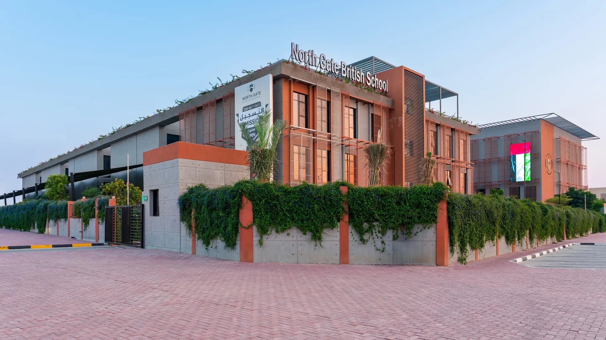
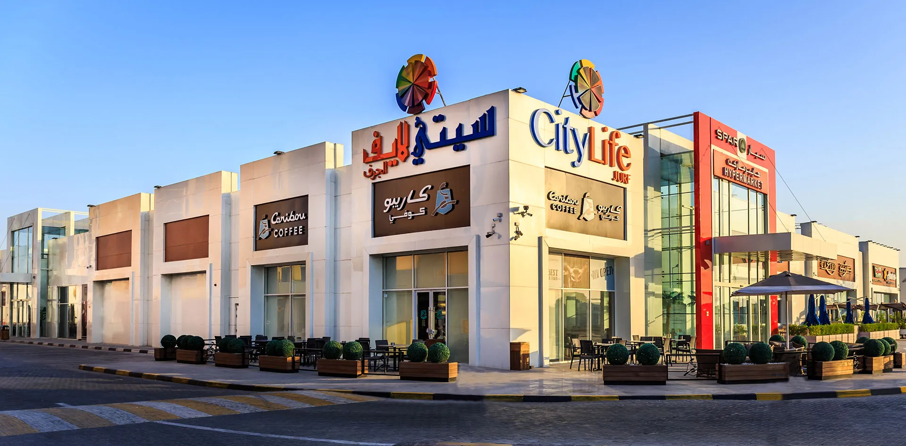
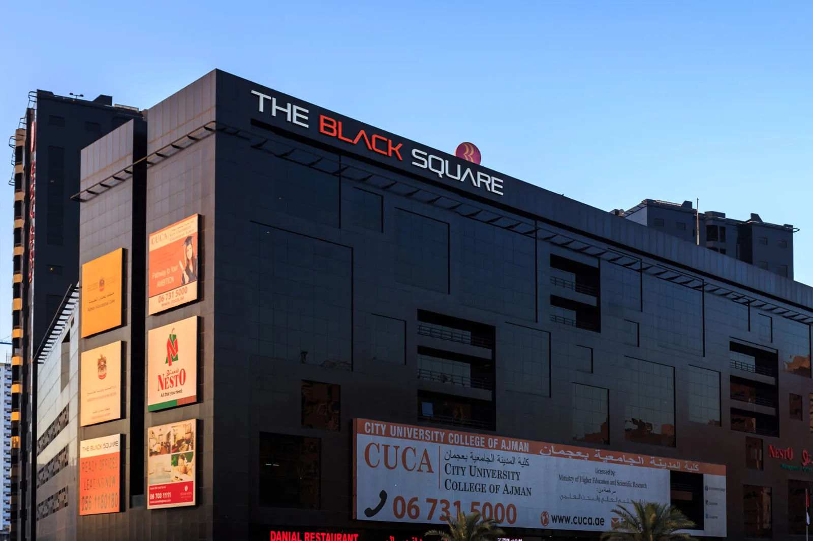
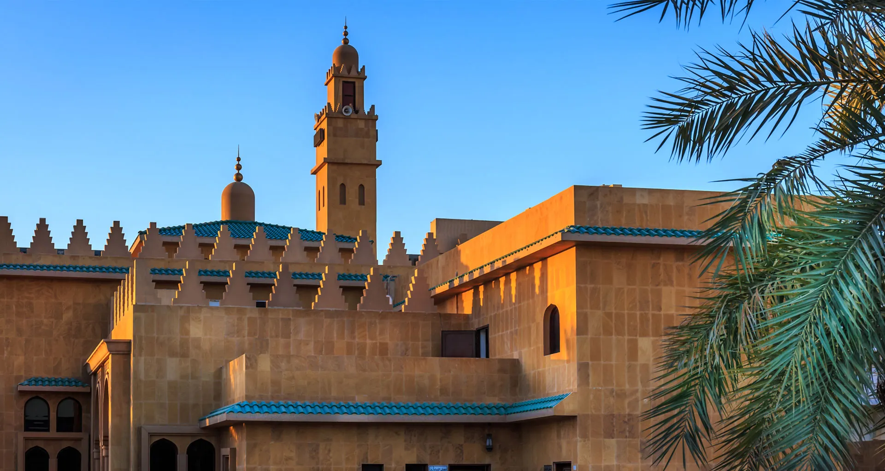

Since 2006, Proarc has shaped how Ajman learns, shops, works, lives and prays.

Proarc designs the vision, navigates all approvals, and manages the build on site.
Master planning · Architecture · Structural engineering · MEP engineering · Interior design · Project management

Learns
Schools and universities
Habitat School · City University Campus · City School · Crown British School · City American School · Woodlem Park Private School · Woodlem Park School, Hamidiya · North Gate British School · Metropolitan School · Habitat School, Al Tallah · Ajman American School · Frontline International School · Delhi Private School

Shops
Malls & shops
Souk Salah · City Life, Al Khor · City Mall, Umm Al Quwain · City Life, Al Tallah II · City Life Mall, Jurf · Mark & Save, Al Tallah · Royal Furniture · Mark & Save, Rashdiya · Mark & Save, Al Jurf · Car Souq · Homes R Us · City Life, Al Tallah


Lives
Homes
Seaside Hills Residence · Azha Garden Residence · Rose Tower · Exclusive Villas · Emirates City D1 Tower · G+8 Floor + Penthouse · Green Buildings · Jeddah Heights · One 678 · Bluebell Residence · Star Giga Tower · DECA 035 — Al Zorah Marina Residences · Azha Park Residences · Zamzam Tower · Sealine Residences · Gateway Residences

And prays.
The mosque
Prayer runs through it all. Al Ghala Mosque, Al Jurf — completed 2009.
4,200,000 m² of living space, in Ajman and around it.
Selected Proarc landmarks across Ajman
Have a project in mind? Let’s talk.
Contact